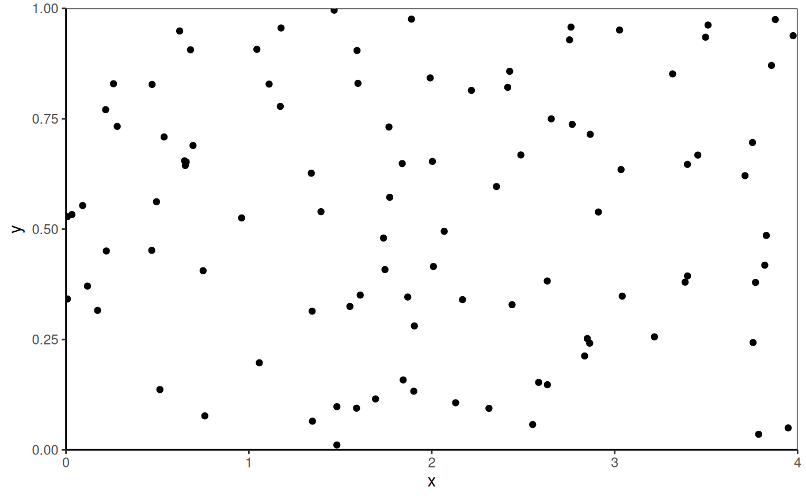
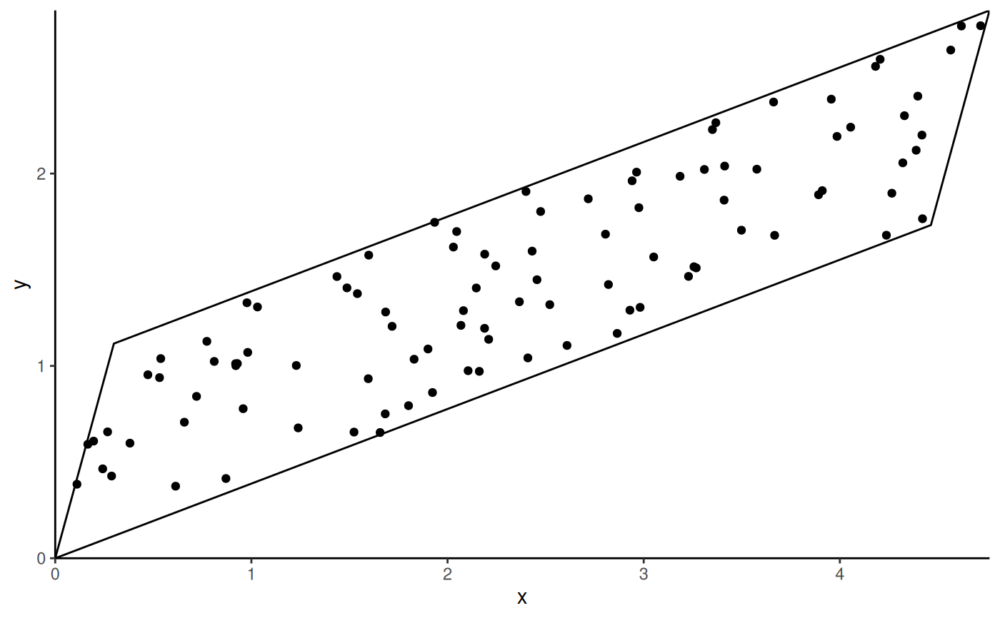

coord_trans_xy behaves similarly to ggplot2::coord_trans() in that it
occurs after statistical transformation and will affect the visual appearance
of geoms. The main difference is that it takes a single transformer that is
applied to the x and y axes simultaneously. Any transformers produced by
ggforce::linear_trans() that have x and y arguments should work,
but any other transformers produced using scales::trans_new() that take x
and y arguments should also work. Axis limits will be adjusted to account for
transformation unless limits are specified with xlim or ylim. This only
works with geoms where all points are defined with x and y
coordinates (e.g., ggplot2::geom_point(), ggplot2::geom_polygon()). This
does not currently work with geoms where point coordinates are extrapolated
(e.g., ggplot2::geom_rect()).
Usage
coord_trans_xy(
trans = NULL,
xlim = NULL,
ylim = NULL,
expand = FALSE,
default = FALSE,
clip = "on"
)Arguments
- trans
Transformer for x and y axes.
- xlim, ylim
Limits for the x and y axes.
- expand
If
TRUE, the default, adds a small expansion factor to the limits to ensure that data and axes don't overlap. IfFALSE, limits are taken exactly from the data orxlim/ylim.- default
Is this the default coordinate system? If
FALSE(the default), then replacing this coordinate system with another one creates a message alerting the user that the coordinate system is being replaced. IfTRUE, that warning is suppressed.- clip
Should drawing be clipped to the extent of the plot panel? A setting of
"on"(the default) means yes, and a setting of"off"means no. In most cases, the default of"on"should not be changed, as settingclip = "off"can cause unexpected results. It allows drawing of data points anywhere on the plot, including in the plot margins. If limits are set viaxlimandylimand some data points fall outside those limits, then those data points may show up in places such as the axes, the legend, the plot title, or the plot margins.
Examples
# make transformer
library(ggforce)
trans <- linear_trans(shear(2, 0), rotate(-pi / 3))
# set up data to be plotted
square <- data.frame(x = c(0, 0, 4, 4), y = c(0, 1, 1, 0))
points <- data.frame(x = runif(100, 0, 4), y = runif(100, 0, 1))
# plot data normally
library(ggplot2)
ggplot(data = points, aes(x = x, y = y)) +
geom_polygon(data = square, fill = NA, color = "black") +
geom_point(color = "black") +
coord_cartesian(expand = FALSE) +
theme_classic()

# plot data with transformation
ggplot(data = points, aes(x = x, y = y)) +
geom_polygon(data = square, fill = NA, color = "black") +
geom_point(color = "black") +
coord_trans_xy(trans = trans, expand = FALSE) +
theme_classic()
